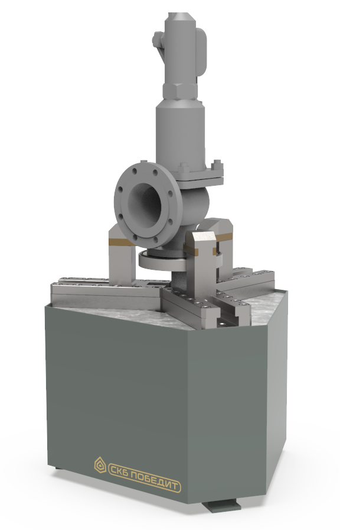

ПОБЕДИТ-С-1
Определение давления настройки предохранительных клапанов (тарирование), испытание узла затвора на герметичность.
Определение давления настройки предохранительных клапанов (тарирование), испытание узла затвора на герметичность.
| Параметры | ПОБЕДИТ-С-1-250-15 | ПОБЕДИТ-С-1-300-40 | ПОБЕДИТ-С-1-400-60 |
|---|---|---|---|
| Максимальное распорное усилие, т | 15 | 40 | 60 |
| Диапазон применения, DN, мм | 10-250 | 10-400 | 10-400 |
| Диаметр зажимаемого фланца, min-max, мм | 45-460 | 90-580 | 90-600 |
| Максимальная толщина зажимаемого фланца, мм | 115 | ||
| Габаритные размеры (ДхШхВ), мм | 1000х1080х1000 | 1050х1070х1002 | 1200х1150х1002 |
| Масса, кг | 530 | 700 | 650 |
Предохранительные клапаны пружинного типа;
Предохранительные клапаны с пилотным управлением.
Быстрая центровка и зажим изделия за счет синхронного перемещения прихватов;
Универсальный испытательный стол позволяет осуществлять установку и испытания предохранительных клапанов различных диаметров без переналадки стенда;
Контроль герметичности выходных патрубков осуществляется эластомерными заглушками с БРС, что значительно сокращает время испытаний;
Все элементы, контактирующие с водой, выполнены из коррозионно-стойких материалов или имеют антикоррозионные покрытия;
Для снижения шума срабатывающего клапана при настройке, стенды оснащаются глушителем.*